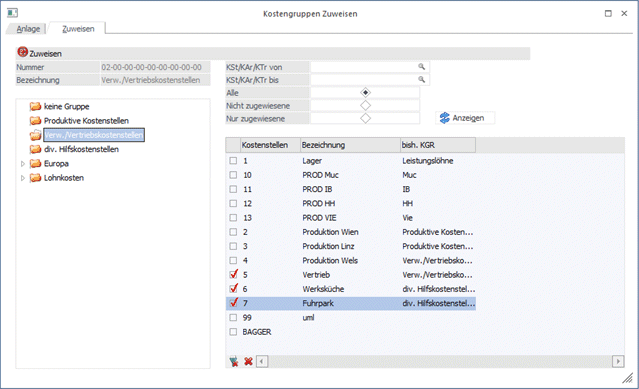
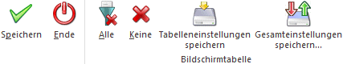

Wenn neue Kostengruppen angelegt wurden, können diese auf einfache Art und Weise bestehenden Kosten-Stammdaten zugeordnet werden.
Die Zuordnung von Kostengruppen erfolgt im Menüpunkt
1 Stammdaten
1 Gruppenstamm
1 Register Zuweisen

Die Auswahl, welcher Gruppenbereich (Kostenarten, -stellen oder -träger) zugewiesen werden soll, erfolgt bereits im Fenster "Kostengruppenanlage".
In der Baumstruktur werden alle Gruppen des ausgewählten Bereiches angezeigt. Hier kann gewählt werden, welche Gruppe zu welchen Stammdaten zugeordnet werden sollen.
Je nachdem, welcher Stammdatenbereich gewählt wurde, kann dieser Bereich eingeschränkt werden (Kostenstelle, -art, -träger von - bis).
Durch die Optionen "Alle", "Nicht zugewiesene" und "Nur zugewiesene" kann die Anzeige der zu bearbeitenden Stammdatensätze zusätzlich eingeschränkt werden.
Die Zeilen, denen eine neue Gruppe zugewiesen werden soll, müssen markiert werden. Dazu muss die Checkbox in der ersten Spalte der Tabelle aktiviert werden.
Zuweisungen, welche entfernt werden müssen, werden in der Baumstruktur dem Ordner "keine Gruppe" zugewiesen.
Buttons

Ø Speichern
Durch Drücken des OK-Buttons werden die Kostengruppen zugewiesen
Ø Ende (ESC-Taste)
Das Fenster wird verlassen ohne vorgenommene Änderungen zu speichern.
Ø Alle
Es werden alle Zeilen selektiert
Ø Keine
Es werden alle Zeilen deselektiert.
Ø Tabelleneinstellungen speichern
Die Spalten einer Tabelle können grundsätzlich an beliebige Positionen verschoben, bzw. in der Breite entsprechend angepasst werden. Durch Anwahl des Buttons "Tabelleneinstellungen speichern" werden die Einstellungen benutzerspezifisch gespeichert und bei dem nächsten Aufruf des Programmpunktes wieder vorgeschlagen.
Ø Gesamteinstellungen speichern
Im Gegensatz zu "Tabelleneinstellungen speichern" können mit "Gesamteinstellungen speichern" mehrere Tabellenaufbauten gespeichert und nach Wunsch geladen werden. Zusätzlich werden Sonderfunktionen der Tabelle (z.B. "Spalte gruppieren") ebenfalls bei der Speicherung bedacht.
Fensterbutton
Ø
Entsprechend der Ansichtseinstellung (alle/nicht zugewiesene/zugewiesene) werden die entsprechenden Zeilen angezeigt.